Sou Rodrigo Rosa Marçal, desenvolvedor Full Stack com experiência em criação de soluções digitais completas, adquirida por meio de uma formação autodidata em plataformas de cursos gratuitos como Alura, Rocketseat, Udemy, Coursera e FreeCodeCamp. Minha trajetória é marcada pela dedicação em transformar aprendizado em projetos práticos, alinhando tecnologia e inovação para resolver problemas reais.
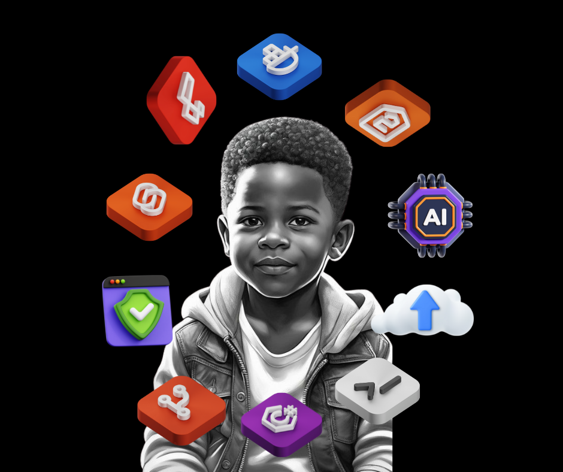
Outros: Design responsivo, APIs RESTful, integração com serviços externos.
Destaques Profissionais:
Realizei projetos completos, desde a concepção do design até a implementação do backend e integração de APIs.
Contribuí para projetos open-source, fortalecendo minha habilidade de trabalhar em equipe e resolver problemas reais de desenvolvimento.
Sempre atualizado com as tendências tecnológicas, focando em entregar soluções eficientes e escaláveis.
Linkedin,
GitHub e
Currículo.
Front end Developer
I.A: Inteligência artificial automatiza tarefas, analisa dados e cria soluções inovadoras com aprendizado de máquina.
Segurança:Protege sistemas e dados contra ameaças, garantindo confidencialidade, integridade e disponibilidade.
Cloud Computing:Armazena, processa e acessa dados via internet, escalando recursos de forma flexível e econômica.
Seo: Otimiza sites para melhorar o posicionamento nos mecanismos de busca e atrair mais tráfego orgânico.
Kotlin: Linguagem moderna, ideal para desenvolvimento Android e aplicações multiplataforma com alta produtividade e segurança.
PHP: Usado para criar páginas web dinâmicas, integra-se facilmente a bancos de dados e servidores web.
C: Linguagem poderosa para desenvolvimento de sistemas operacionais, drivers e aplicações de alto desempenho.
Css3: Define estilos visuais e animações para páginas web, aprimorando a experiência do usuário.
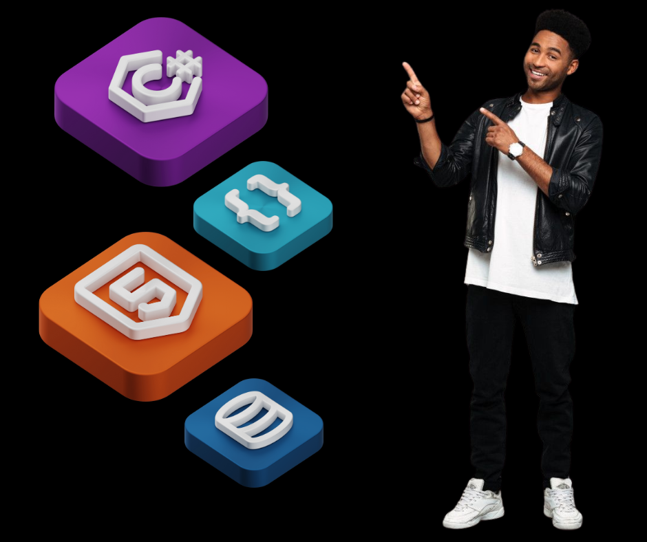
C#: Versátil, usado para aplicações Windows, jogos Unity e sistemas corporativos robustos.
Bracket: Editor de código focado em web design, ideal para HTML, CSS e JavaScript.
HTML5: Estrutura de páginas web modernas, com suporte a multimídia e APIs avançadas.
DataBase: Armazena, organiza e permite a consulta de grandes volumes de dados para sistemas e aplicações.
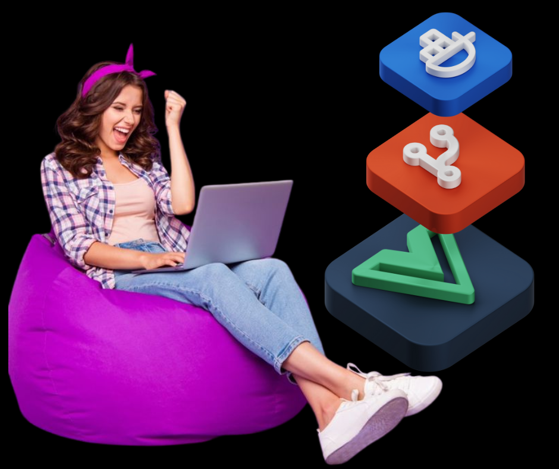
Docker: Ferramenta para criar ambientes isolados e portáveis para desenvolvimento e implantação de aplicações.
Git: Sistema de controle de versão para rastrear mudanças em código e colaborar em projetos.
Vue: Framework JavaScript para criar interfaces web interativas e reativas com facilidade.
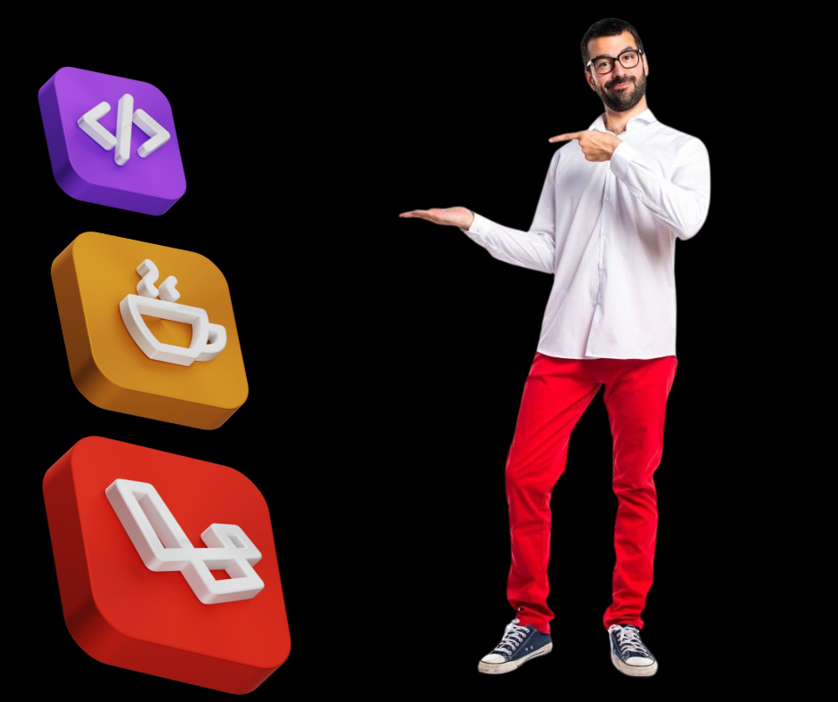
Código: Atalho para desenvolvimento, refere-se à criação de software utilizando linguagens e ferramentas.
Java: Popular para sistemas corporativos, Android e aplicações multiplataforma devido à sua robustez.
Laravel: Framework PHP simplifica o desenvolvimento web com recursos modernos e arquitetura elegante.
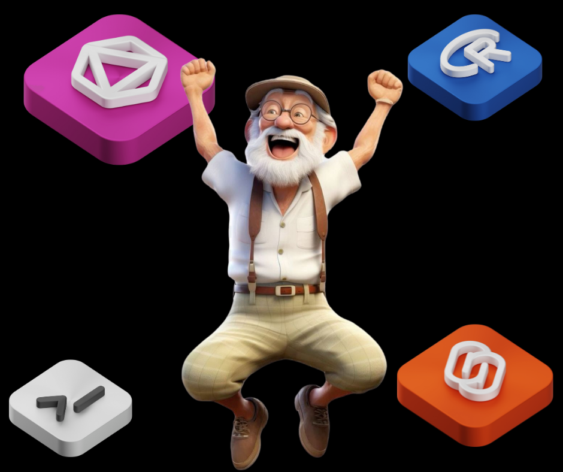
GraphQL: API flexível para consultar dados exatos, otimizando interações entre cliente e servidor.
Svelte: Framework moderno que compila código reativo para criar aplicações leves e rápidas.
R: Linguagem para análise de dados e visualização, amplamente utilizada em estatística e ciência de dados.
Terminal: Interface de linha de comando para interagir diretamente com o sistema operacional e ferramentas.
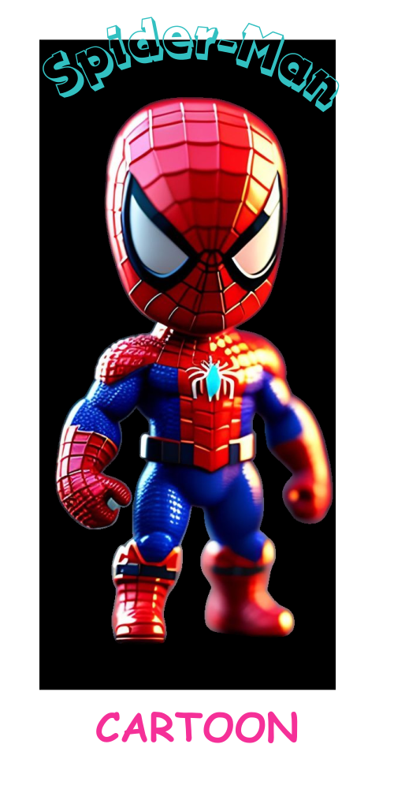
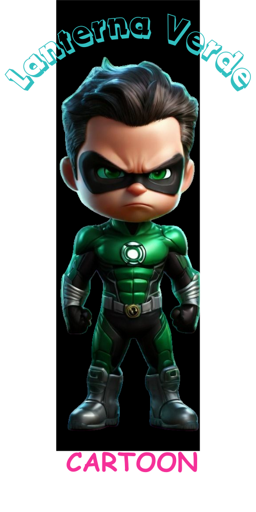
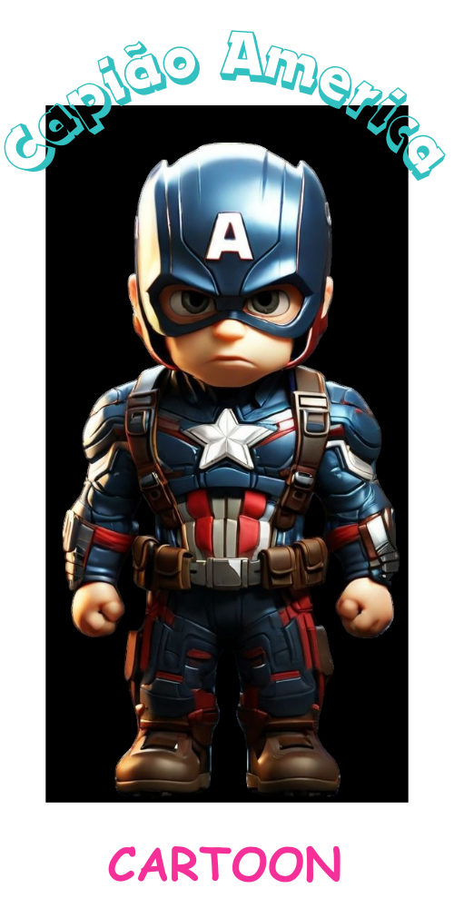
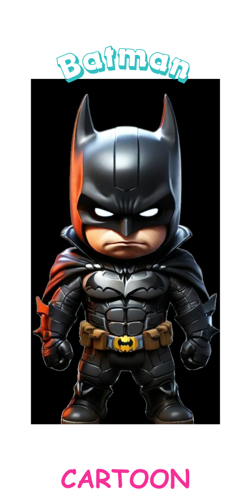
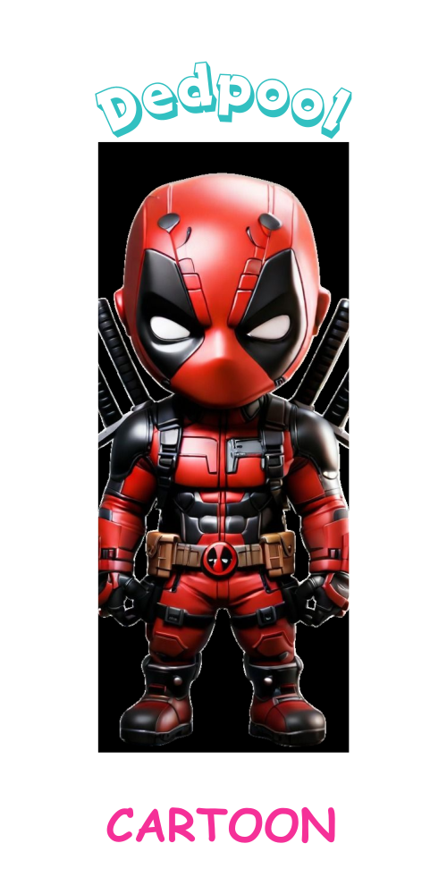
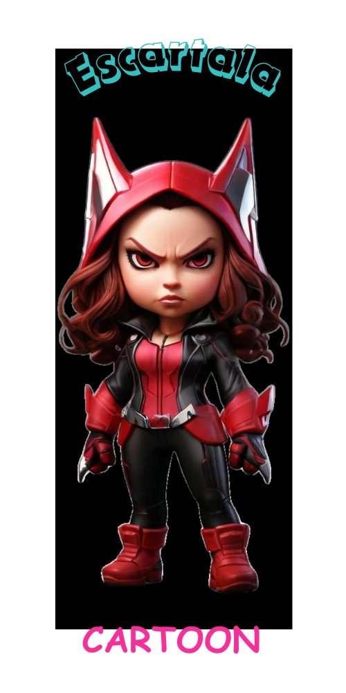
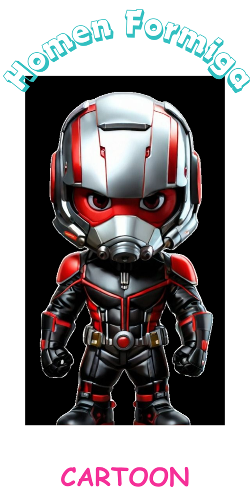
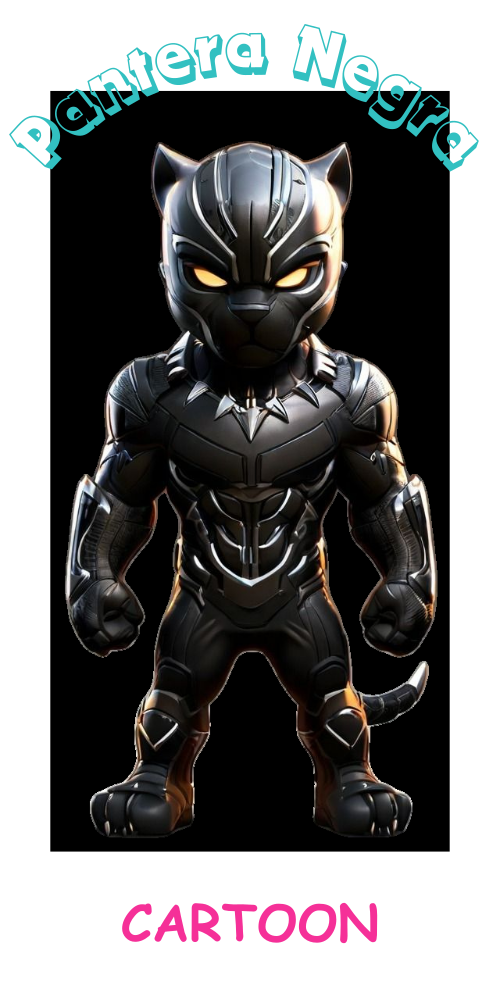
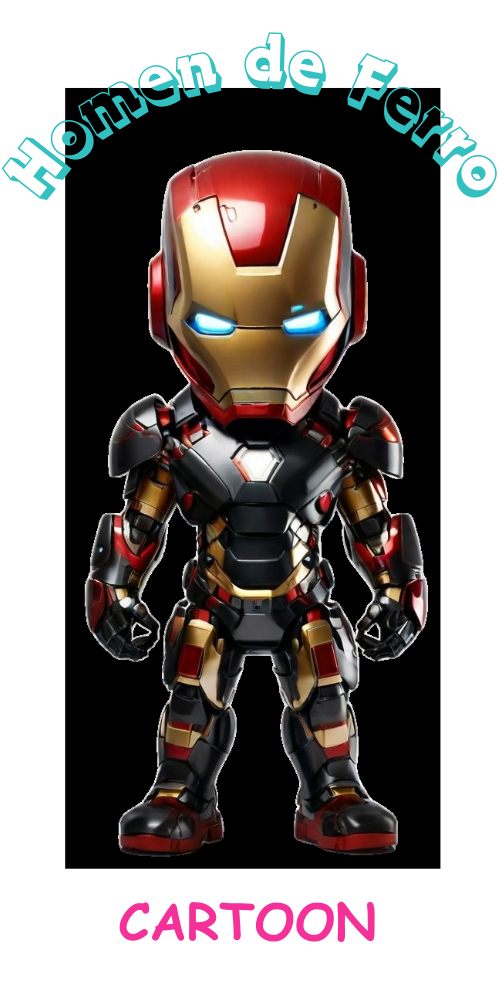
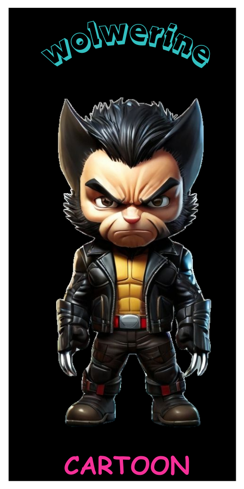
Visão Profissional :
Sou movido pela paixão pela tecnologia e pela busca incessante de aprendizado. Para mim, cada projeto é uma oportunidade de criar algo significativo, com foco em usabilidade, eficiência e escalabilidade.
Estou pronto para enfrentar desafios e contribuir para o sucesso de empresas e projetos, trazendo criatividade e técnica para entregar resultados de alto impacto.
Se precisar de um desenvolvedor comprometido e preparado para transformar ideias em realidade, conte comigo!
Cursos online gratuitos:
O que você precisa para começar?
Apenas um computador, acesso à internet e vontade de aprender. A programação é acessível a todos e aprender é um processo contínuo. Comece pequeno e avance no seu ritmo.
Fontes gratuitas para iniciar
Plataformas online: Sites como FreeCodeCamp e Khan Academy ensinam do básico ao avançado.
: Canais como Programador Br, Codehal,
Curso em Vídeo oferecem tutoriais completos.
Comunidades: Fóruns como Stack Overflow ou grupos no Discord são ótimos para tirar dúvidas.
O mundo da programação está esperando por você! 🚀
Jesus te Ama
JEREMIAS 33:3
JOÃO 14:6
"Respondeu Jesus: "Eu sou o caminho, a verdade e a vida. Ninguém vem ao Pai, a não ser por mim. ”
ROMANOS 8:1
"Portanto, agora nenhuma condenação há para os que estão em Cristo Jesus, que não andam segundo a carne, mas segundo o Espírito".
SALMOS 23:4
"Ainda que eu ande pelo vale da sombra da morte, não temerei mal nenhum, porque tu estás comigo; o teu bordão e o teu cajado me consolam."
A Graça de Deus
Ela é uma demonstração do amor infinito de Deus, que busca e salva os perdidos, transforma suas vidas e os conduz à glória eterna.